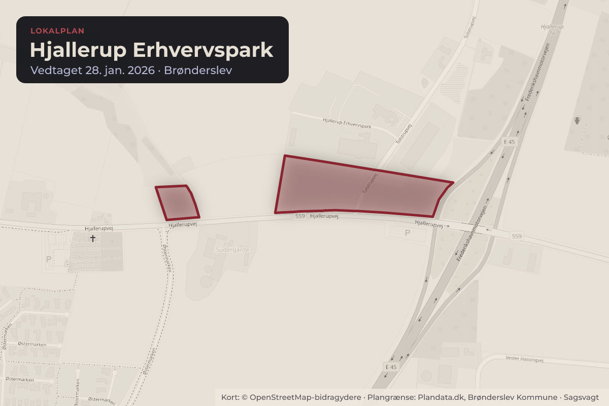
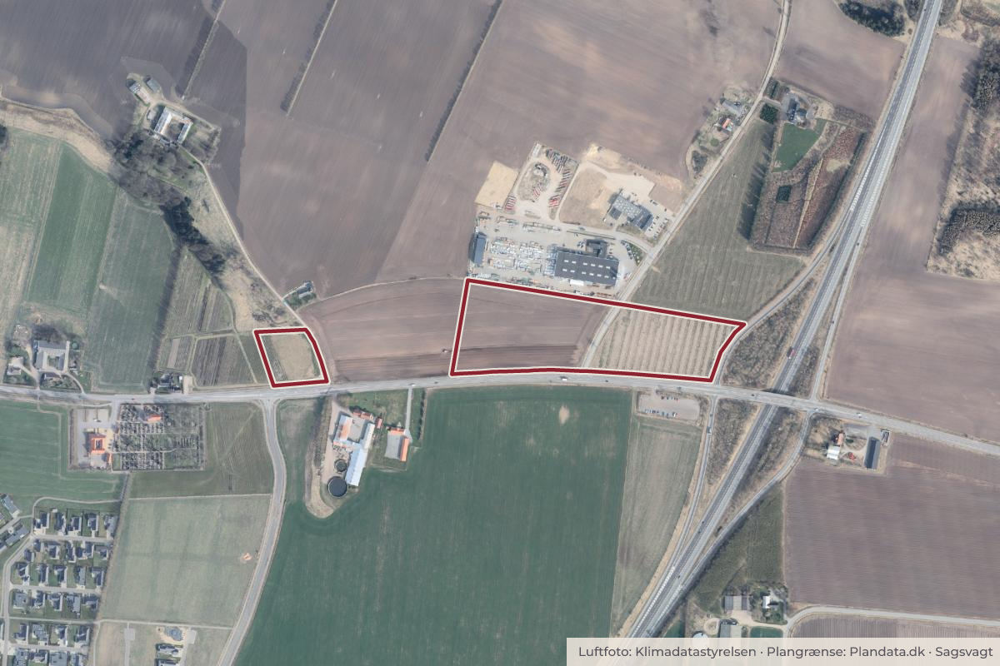

Besluttet 17. august, Teknisk Udvalg, Brønderslev
Dispensation fra lokalplan ved Hjallerup Erhvervspark til 27,5 meter skiltepylon
Byggeri og lokalplanerErhverv og job

Kort: © OpenStreetMap-bidragydere. Plangrænse: Plandata.dk, Brønderslev Kommune.

Kort fortalt
- Hvem
- Teknisk Udvalg, Brønderslev Kommune
- Hvornår
- Mandag 17. august 2026
- Status
- Besluttet. Punkt 1 godkendt. Punkt 2 ikke godkendt.
Er noget forkert her? Skriv til os
Læs hele sagen Kommunens egen tekst
Sagsfremstilling
Spring Invest ansøger på vegne af McDonalds om forhåndsgodkendelse til opstilling af en
skiltepylon ved Hjallerup Erhvervspark. Skiltepylonen skal opsættes som en
virksomhedsreklame i forbindelse med etablering af en fastfoodrestaurant ud til Hjallerupvej og
i nærhed til Frederikshavnmotorvejen E45 Afkørsel 16.
Fastfoodrestauranten har meddelt, som vilkår for etablering, at der skal opsættes en skiltning
med synlighed fra motorvejen.
Grundejer har foretaget en mulighedsundersøgelse med opstilling af en kran placeret på den
påtænkte placering. Der er på baggrund af fotoregistrering langs motorvejen og Hjallerupvej
udarbejdet visualiseringer fra standpunkter, hvor pylonen fremstår tydeligt.
Forvaltningen vurderer, at det er nødvendigt med en pylonhøjde på 27,5 meter for at skabe
begrænset synlighed fra motorvejen. Det er en udfordring, at pylonen opstilles forholdsvis langt
fra motorvejen med en afstand på ca. 320 meter samt at den eksisterende beplantning langs
motorvejens rabatter, kan sløre for udsyn til pylonen. Disse forhold er medvirkende til behov for
en pylonhøjde på 27,5 meter.
Højden på de 27,5 meter skal derfor udelukkende ses som nødvendigt for en synliggørelse fra
motorvejen. Ansøger er i processen fremkommet med flere alternativer til skiltning, men disse
er vurderet i strid med Naturbeskyttelseslovens § 21 om skiltning i det åbne land, som
administreres særdeles restriktivt af Vejdirektoratet.
Forvaltningens vurdering
Forvaltningen vurderer, at en skiltepylon på 27,5 meter vil opnå en synlighed fra motorvejen i
begge retninger, om end synligheden i nordlig retning vil være begrænset i sommerhalvåret
med løvsæson, der visuelt slører pylonen. I sydgående retning vil der kun være punktvis
synlighed, da der flere steder vil være sløret af eksisterende beplantning. Særligt vil der være
begrænset synlighed jo tættere på motorvejsafkørslen man kommer.
Fra Hjallerup i både østlig og vestlig retning vil pylonen fremstå markant og dominerende i
landskabet.
Eksisterende planlægning
Området hvor pylonen påtænkes opstillet er omfattet af lokalplan 03-E-05.02 Hjallerup
Erhvervspark vedtaget i januar 2026. Lokalplanen har til formål at udlægge området som
erhvervsområde, men også gøre det muligt at etablere servicefunktioner i form af ladestation
og restaurationer, som service for primært motorvejsnettet.
Lokalplanen tillader opstilling af en skiltepylon i området med en højde på max. 18 meter.
Hvis ansøgningen imødekommes vil det kræve en dispensation fra lokalplanen.
Skiltning i det åbne land
Vejdirektoratet er tilsynsførende myndighed på skiltning i det åbne land langs statsvejene. Hvis
Brønderslev Kommune meddeler dispensation, skal beslutning sendes i 14 dages høring
blandt boende i området. I høringsperioden har Vejdirektoratet mulighed for at gøre indsigelse
med opsættende virkning.
Lodsejer har i processen været i dialog med Vejdirektoratet om pylonen og deres umiddelbare
vurdering er, at pylonen højest sandsynlig vil være i strid med Naturbeskyttelseslovens regler
for skiltning i det åbne land (§ 21) og dermed agter at gøre indsigelse mod projektet.
Forvaltningen har undersøgt alternative placeringer for en skiltepylon, der kan skabe en
synlighed fra motorvejen, men Naturbeskyttelseslovens skilteregler tillader kun skiltning for
virksomheder max. 20 meter fra selve virksomheden der skiltes for. Dette vilkår kan ikke
opfyldes, hvis skiltepylonen f.eks. flyttes tættere på motorvejen eller på anden strategisk
placering ved Hjallerup Erhvervspark.
Personalemæssige konsekvenser
Ingen.
Indstilling
Fagforvaltningen for Klima, Teknik og Kultur indstiller, at Teknisk Udvalg beslutter, at
1. meddele dispensation til 27,5 meter skiltepylon og igangsætte nabohøring, eller
2. meddele afslag.
Beslutning
Punkt 1 godkendt.
Punkt 2 ikke godkendt.
Kilde: Brønderslev Kommune, Teknisk Udvalg, referat fra mødet mandag 17. august 2026, punkt 3. Læs den originale sag hos kommunen.
Bydele i sagen: Hjallerup